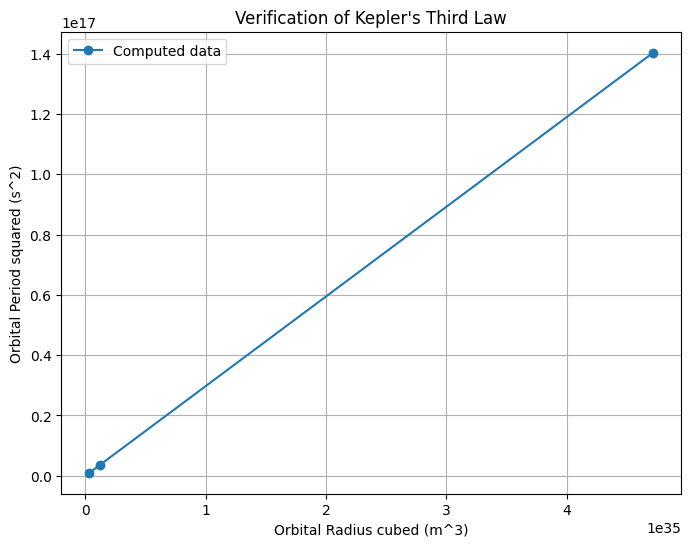

Problem 1
Solution: Orbital Period and Orbital Radius (Kepler’s Third Law)
1. Theoretical Derivation
For a body of mass \(m\) orbiting a much larger mass \(M\) (e.g., a planet orbiting the Sun), under Newtonian gravity, the gravitational force provides the centripetal force required for circular motion:
\[
F_{\text{gravity}} = F_{\text{centripetal}}
\]
\[
\frac{G M m}{r^2} = m \frac{v^2}{r}
\]
where:
- \(G\) = gravitational constant,
- \(r\) = orbital radius,
- \(v\) = orbital speed.
Simplify:
\[
v^2 = \frac{G M}{r}
\]
Orbital period \(T\) is the time to complete one orbit:
\[
T = \frac{2 \pi r}{v}
\]
Substitute \(v\):
\[
T = 2 \pi r \sqrt{\frac{r}{G M}} = 2 \pi \sqrt{\frac{r^3}{G M}}
\]
Square both sides:
\[
T^2 = \frac{4 \pi^2}{G M} r^3
\]
This is Kepler’s Third Law for circular orbits: the square of the period is proportional to the cube of the radius.
2. Implications in Astronomy
- Determining Planetary Masses: Given \(T\) and \(r\), one can estimate the mass \(M\) of the central body.
- Satellite Orbits: Used to design orbits with desired periods.
- Distance Measurements: Helps infer distances in planetary and stellar systems.
- Foundation for Elliptical Orbits: Kepler’s law extends to elliptical orbits with \(r^3\) replaced by the cube of the semi-major axis.
3. Real-World Examples
-
Moon-Earth System:
-
\(r \approx 3.84 \times 10^8\) m,
- \(T \approx 27.3\) days,
-
Using \(M_{\text{Earth}} \approx 5.97 \times 10^{24}\) kg, the formula holds closely.
-
Planets in Solar System:
Plotting \(T^2\) vs. \(r^3\) shows linear relationship confirming the law.
4. Computational Model (Python)
import numpy as np
import matplotlib.pyplot as plt
# Constants
G = 6.67430e-11 # Gravitational constant (m^3 kg^-1 s^-2)
M_sun = 1.989e30 # Mass of the Sun (kg)
# Orbital radii in meters (Earth, Mars, Jupiter)
radii = np.array([1.496e11, 2.279e11, 7.785e11])
# Compute orbital periods using Kepler's law
periods = 2 * np.pi * np.sqrt(radii**3 / (G * M_sun))
# Convert periods from seconds to Earth years
periods_years = periods / (60 * 60 * 24 * 365.25)
# Plot T^2 vs r^3
plt.figure(figsize=(8,6))
plt.plot(radii**3, periods**2, 'o-', label='Computed data')
plt.xlabel('Orbital Radius cubed (m^3)')
plt.ylabel('Orbital Period squared (s^2)')
plt.title('Verification of Kepler\'s Third Law')
plt.grid(True)
plt.legend()
plt.show()
print("Orbital periods (years):", periods_years)

5. Extensions
- Elliptical Orbits: Kepler’s Third Law generalizes using semi-major axis \(a\):
\[
T^2 \propto a^3
\]
- Multiple Body Systems: Requires numerical integration for complex gravitational interactions.
- Relativistic Corrections: For strong gravity (e.g., near black holes).
Summary
- Derived \(T^2 \propto r^3\) for circular orbits.
- Explained its significance in astronomy and satellite mechanics.
- Verified using example orbital data.
- Provided a Python simulation and visualization.